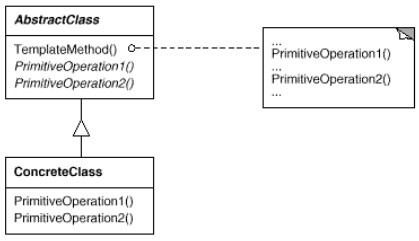

But : Définir le squelette d'un algorithme dans une méthode, et déléguer certaines étapes de l'algo à des sous-classes.
Permet aux sous-classes de redéfinir certaines étapes de l'algo sans en changer la structure.
Les parties invariantes de l'algo sont implémentées dans une classe abstraite, et les parties variables sont redéfinies dans les sous-classes.
Exemples
Thé et café
Exemple venant de "Design patterns head first".On veut développer un programme faisant du thé et du café.
Si on compare les recettes, elles sont similaires sans être identiques :
void prepareRecipe() {
boilWater();
brewCoffeeGrinds();
pourInCup();
addSugarAndMilk();
}
void prepareRecipe() {
boilWater();
steepTeaBag();
pourInCup();
addLemon();
}
Template method traduit une manière simple et intuitive de procéder :
On identifie les étapes identiques et celles qui sont différentes.
On voit qu'on est dans un cas où les étapes différentes sont suffisamment similaires pour être décrites de manière commune.
Par exemple avoir :
void prepareRecipe() {
boilWater();
brew();
pourInCup();
addCondiments();
}
Pour implémenter ça, on crée une super-classe commune à
Coffee et Tea : CaffeineBeverage,
dans laquelle on implémente la méthode
prepareRecipe(), ainsi que les étapes communes (boilWater() et pourInCup()).
Les étapes spécifiques sont déclarées
abstract dans la super-classe et seront implémentées dans les sous-classes (Coffee et Tea).
public abstract class CaffeineBeverage {
final void prepareRecipe() {
boilWater();
brew();
pourInCup();
addCondiments();
}
abstract void brew();
abstract void addCondiments();
void boilWater() { System.out.println("Boiling water"); }
void pourInCup() { System.out.println("Pouring into cup"); }
}
public class Coffee extends CaffeineBeverage {
public void brew() {
System.out.println("Dripping Coffee through filter");
}
public void addCondiments() {
System.out.println("Adding Sugar and Milk");
}
}
public class Tea extends CaffeineBeverage {
public void brew() {
System.out.println("Steeping the tea");
}
public void addCondiments() {
System.out.println("Adding Lemon");
}
}
- On appelle factory method
prepareRecipe().
- Noter l'emploi de
final dans la factory method : la structure de l'algo est définie dans la super-classe, les sous-classes ne redéfinissent que certaines étapes.
- Noter que certaines étapes ont une implémentation par défaut (ce qui n'empêche pas les sous-classes de les redéfinir).
Hooks
(hook = crochet)Contrairement aux étapes de l'algo obligatoires pour toutes les sous-classes, les hooks permettent de rendre certaines étapes optionnelles.
La super-classe en fournit une implémentation par défaut.
public abstract class CaffeineBeverageWithHook {
final void prepareRecipe() {
boilWater();
brew();
pourInCup();
if (customerWantsCondiments()) {
addCondiments();
}
}
void addCondiments(){}
boolean customerWantsCondiments() {
return false;
}
// ...
}
Autre exemple
Voir PersonneDemo.javaStructure
Le diagramme gof est très simple : Remarques
On peut définirprotected les primitive operations afin de s'assurer qu'elles ne seront pas appelées de l'extérieur.
On parle d'inversion de contrôle, car c'est la super-classe qui appelle les méthodes des sous-classes, et non l'inverse.
(autre formulation, le principe d'Hollywood : "Ne nous appelez pas, nous vous appelerons").
Les sous-classes participent au calcul, mais c'est la super-classe qui décide quand.
Template method utilise des sous-classes pour faire varier les parties d'un algorithme, alors que Strategy utilise la délégation pour faire varier l'algorithme entier.
"Les template methods sont si fondamentales qu'on les trouve dans presque toutes les classes abstraites" (gof)